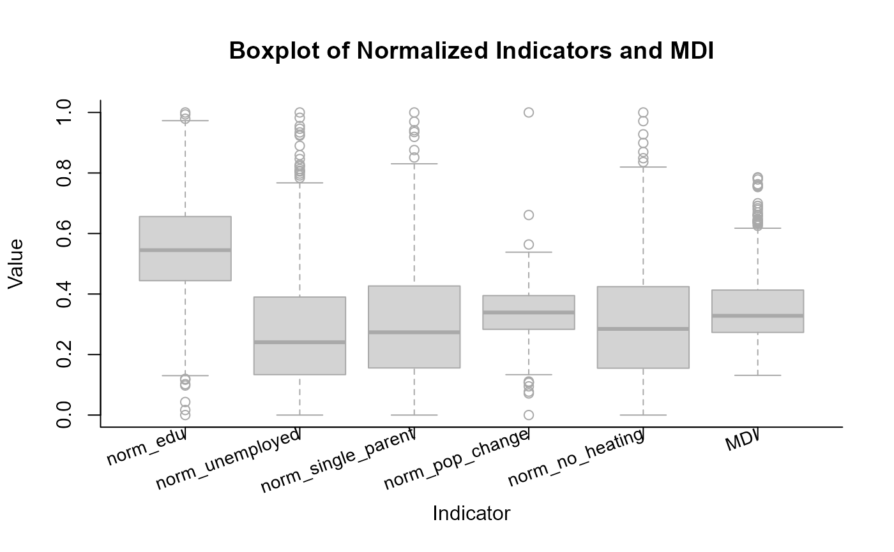
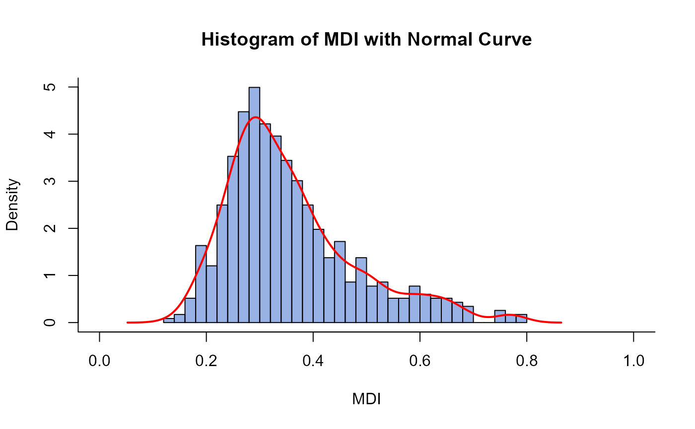

Create the BEST-COST Multidimensional Deprivation Index (MDI)
Source:R/prepare_mdi.R
prepare_mdi.RdThis function creates the BEST-COST Multidimensional Deprivation Index (MDI) and checks internal consistency of the single deprivation indicators using Cronbach's coefficient \(\alpha\) and other internal consistency checks
Usage
prepare_mdi(
geo_id_micro,
edu,
unemployed,
single_parent,
pop_change,
no_heating,
n_quantile,
verbose = TRUE
)Arguments
- geo_id_micro
Numeric vectororstring vectorspecifying the unique ID codes of each geographic area considered in the assessment (geo_id_micro).- edu
Numeric vectorindicating educational attainment as % of individuals (at the age 18 or older) without a high school diploma (ISCED 0-2) per geo unit- unemployed
Numeric vectorcontaining % of unemployed individuals in the active population (18-65) per geo unit- single_parent
Numeric vectorcontaining single-parent households as % of total households headed by a single parent per geo unit- pop_change
Numeric vectorcontaining population change as % change in population over the previous 5 years (e.g., 2017-2021) per geo unit- no_heating
Numeric vectorcontaining % of households without central heating per geo unit- n_quantile
Integer valuespecifying the number of quantiles in the analysis.- verbose
Booleanindicating whether function output is printed to console. Default:TRUE.
Value
This function returns a list containing
1) mdi_main (tibble) with the columns (selection);
geo_id_microcontaining thenumericgeo id'sMDIcontaining thenumericBEST-COST Multidimensional Deprivation Index valuesMDI_indexnumericdecile based on values in the columnMDIadditional columns containing the function input data
2) mdi_detailed (list) with several elements for the internal consistency check of the BEST-COST
Multidimensional Deprivation Index.
boxplot(language) containing the code to reproduce the boxplot of the single indicatorshistogram(language) containing the code to reproduce a histogram of the BEST-COST Multidimensional Deprivation Index (MDI) values with a normal distribution curvedescriptive_statistics(listtable of descriptive statistics (mean, SD, min, max) of the normalized input data and the MDIcronbachs_alpha_value(numeric valueSee the Details section for the reliability rating this value indicatespearsons_corr_coeff(numeric vector) Person's correlation coefficient (pairwise-comparisons)
Details
Methodology
This function condenses socio-economic indicators into a multiple deprivation index (MDI) (Mogin et al. 2025) . The reliability of the MDI is assessed using Cronbach's alpha (Cronbach 1951) .
Detailed information about the methodology (including equations) is available in the package vignette. More specifically, see chapters:
Data completeness and imputation
Ensure the data set is as complete as possible. Otherwise, you can try to impute missing data, but R^2 should be greater than or equal to 0.7.
Plots
See the example below for how to reproduce the box plots and
the histogram after the prepare_mdi function call.
References
Cronbach LJ (1951).
“Coefficient alpha and the internal structure of tests.”
Psychometrika, 16(3), 297–334.
doi:10.1007/BF02310555
.
Mogin G, Gorasso V, Idavain J, Lepnurm M, Delaunay-Havard S, Kocbach Bølling A, Buekers J, Luyten A, Devleesschauwer B, Baravelli CM (2025).
“A scoping review of multiple deprivation indices in Europe.”
European Journal of Public Health, 35(6), 1122-1128.
doi:10.1093/eurpub/ckaf190
, https://academic.oup.com/eurpub/article-pdf/35/6/1122/65042936/ckaf190.pdf.
See also
Downstream:
socialize
Examples
# Goal: create the BEST-COST Multidimensional Deprivation Index for
# a selection of geographic units
results <- prepare_mdi(
geo_id_micro = exdat_prepare_mdi$id,
edu = exdat_prepare_mdi$edu,
unemployed = exdat_prepare_mdi$unemployed,
single_parent = exdat_prepare_mdi$single_parent,
pop_change = exdat_prepare_mdi$pop_change,
no_heating = exdat_prepare_mdi$no_heating,
n_quantile = 10,
verbose = TRUE
)
#> [1] "CRONBACH'S α : 0.746"
#> [1] "Acceptable reliability: 0.7 ≤ α < 0.8"
#> [1] "DESCRIPTIVE STATISTICS"
#> norm_edu norm_unemployed norm_single_parent norm_pop_change
#> MEAN 0.542 0.289 0.315 0.338
#> SD 0.171 0.198 0.2 0.09
#> MIN 0 0 0 0
#> MAX 1 1 1 1
#> norm_no_heating MDI
#> MEAN 0.303 0.357
#> SD 0.186 0.122
#> MIN 0 0.1313045
#> MAX 1 0.7855948
#> [1] "PEARSON'S CORRELATION COEFFICIENTS"
#> norm_edu norm_unemployed norm_single_parent norm_pop_change
#> norm_edu 1.0000000 0.3773418 0.2526394 0.1494546
#> norm_unemployed 0.3773418 1.0000000 0.9212899 0.2287402
#> norm_single_parent 0.2526394 0.9212899 1.0000000 0.1737842
#> norm_pop_change 0.1494546 0.2287402 0.1737842 1.0000000
#> norm_no_heating 0.5215904 0.3248140 0.3327336 0.2115399
#> norm_no_heating
#> norm_edu 0.5215904
#> norm_unemployed 0.3248140
#> norm_single_parent 0.3327336
#> norm_pop_change 0.2115399
#> norm_no_heating 1.0000000

 results$mdi_main |>
dplyr::select(geo_id_micro, MDI, MDI_index) |>
dplyr::slice(1:15)
#> # A tibble: 15 × 3
#> geo_id_micro MDI MDI_index
#> <int> <dbl> <int>
#> 1 11001 0.212 1
#> 2 11002 0.432 8
#> 3 11004 0.185 1
#> 4 11005 0.379 7
#> 5 11007 0.312 5
#> 6 11008 0.257 2
#> 7 11009 0.225 1
#> 8 11013 0.214 1
#> 9 11016 0.266 3
#> 10 11018 0.357 6
#> 11 11021 0.175 1
#> 12 11022 0.211 1
#> 13 11023 0.222 1
#> 14 11024 0.223 1
#> 15 11025 0.248 2
# Reproduce plots after the function call
eval(results$mdi_detailed$boxplot)
results$mdi_main |>
dplyr::select(geo_id_micro, MDI, MDI_index) |>
dplyr::slice(1:15)
#> # A tibble: 15 × 3
#> geo_id_micro MDI MDI_index
#> <int> <dbl> <int>
#> 1 11001 0.212 1
#> 2 11002 0.432 8
#> 3 11004 0.185 1
#> 4 11005 0.379 7
#> 5 11007 0.312 5
#> 6 11008 0.257 2
#> 7 11009 0.225 1
#> 8 11013 0.214 1
#> 9 11016 0.266 3
#> 10 11018 0.357 6
#> 11 11021 0.175 1
#> 12 11022 0.211 1
#> 13 11023 0.222 1
#> 14 11024 0.223 1
#> 15 11025 0.248 2
# Reproduce plots after the function call
eval(results$mdi_detailed$boxplot)

eval(results$mdi_detailed$histogram)
